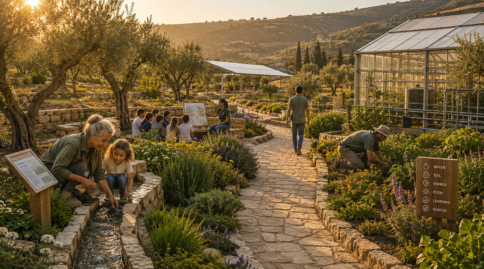
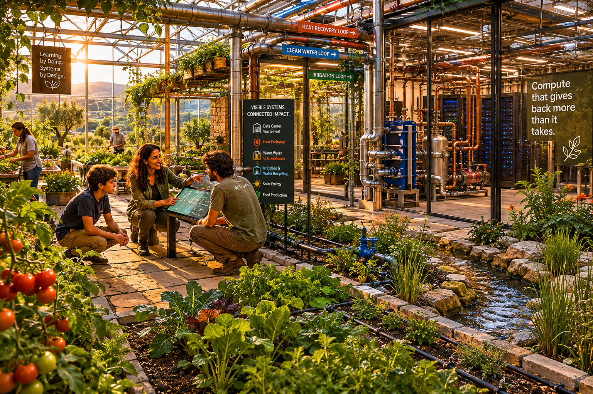
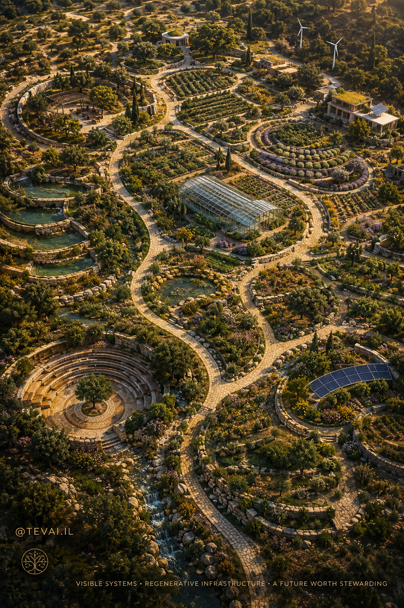
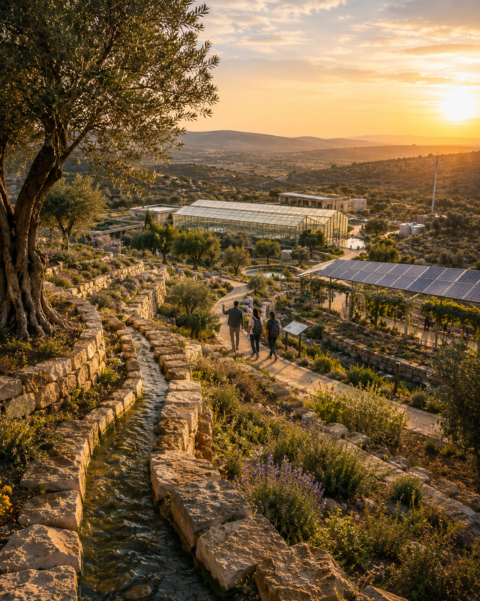
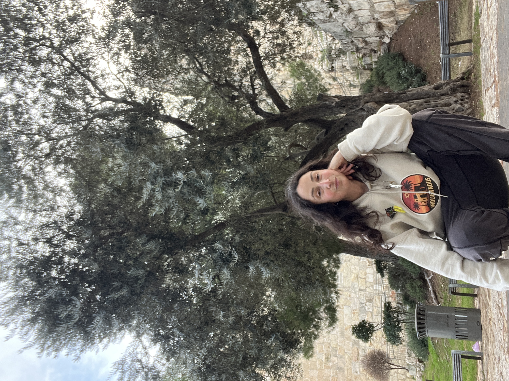

Regenerative Intelligence Infrastructure
This is not anti-AI. It is anti-disconnection.
The Problem
Make the system visible.
Make the footprint accountable.
Make the infrastructure regenerative.
The Central Idea
Every physical system has both a practical purpose and an educational purpose. The landscape itself becomes a teacher. The goal is not merely to produce intelligence — it is to cultivate wiser stewards.
Water Systems
teach stewardship
Food Systems
teach ecology
Energy Systems
teach accountability
Technology Systems
teach responsibility
Living Landscapes
teach wonder
Community Structure
teaches belonging
The Physical Vision
Not a corporate headquarters. Not a server warehouse.
A living systems community.
Pollinator meadows. Native landscapes. Terraced water systems.
Outdoor classrooms. Greenhouses. Research facilities.
Community gathering spaces. Walking paths.
All within the same ecosystem.
The compute infrastructure exists.
But it is not the center of attention.
The system is.

How It Works
Every output becomes an input. Every cost is met with an act of stewardship.
Advanced AI infrastructure powering research, innovation, and human knowledge — visible, not hidden.
Renewable energy integrated into campus design — solar, wind, and clean systems people can see and understand.
Visible water stewardship: reuse, retention, irrigation, and education embedded into every landscape decision.
Greenhouses warmed by server heat. Year-round food production. Regenerative farming as living demonstration.
Pollinator habitats, native restoration, biodiversity monitoring, and ecological research woven through the campus.
Housing, research fellowships, collaborative workspaces — people living within the ecosystem they help steward.

Design Principles
If a visitor asks "Why is that there?" — the answer should reveal a deeper relationship between technology, ecology, education, and community.
Every feature serves a real purpose. Every feature teaches something. Beauty and function are not separate — they are the same act of stewardship.
Optimization without meaning produces systems that work but don't teach. TevAI asks every system to justify its existence in human terms.
People protect what they love. Gardens, native landscapes, water features, art, and walking paths are not decoration. They are the reason people stay.
The challenge of AI is not simply how to build more powerful systems. The challenge is how to build systems worthy of that power.
The Full Vision
How computation, ecology, agriculture, education, and community become one integrated living system.

Why Israel
Not because Israel is a technology hub. Because it has spent generations working at the exact intersection TevAI is building toward.
Water Scarcity
World leader in desalination, drip irrigation, and water reclamation born from necessity
Desertification
Generations of making constrained, difficult land productive, beautiful, and alive
Energy Constraints
Renewable innovation and solar leadership developed from real resource limitations
Community Building
The kibbutz model: work, learning, land, and shared responsibility as a single integrated life
Applied Research
Engineering and science in direct service of real human and ecological problems
TevAI is not imported into Israel.
It grows from the same systems-thinking tradition
that helped Israel make the desert bloom.

The Builder
Environmental educator — 10 years directing programs on a 230-acre farm-based nature center
AI innovator and founder — HevrutAI forensic AI verification system
Youth & Community Director — North Suburban Synagogue Beth El, Highland Park, Illinois
Visual artist and lifelong systems thinker
Rooted in the conviction that education, land, and technology belong together

"The idea emerged from a decade of environmental education and a lifelong interest in systems thinking. A simple question led to the concept: what if the distance between systems became the solution instead of the problem?"
TevAI is the synthesis — the farm, the classroom, the technology, the community, and the conviction that intelligence has an obligation to the world that sustains it. The future does not require less intelligence. It requires deeper integration.
The goal is not to build a beautiful campus. The goal is to create a model that can be replicated — a new category of infrastructure that computes, educates, restores, and belongs to the communities it serves.